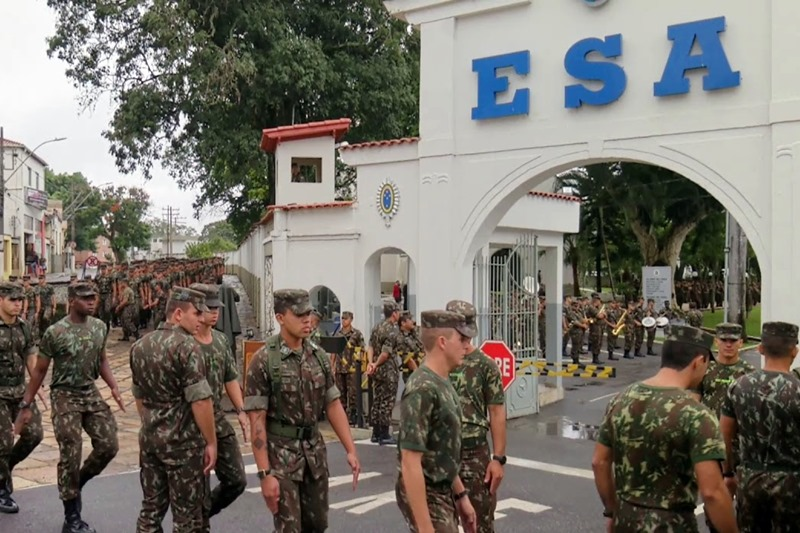

estava pensando sobre o curso da ESA. Tanto tempo perdido né.
Algumas pessoas me diriam que sim, mas eu vejo que meu futuro, talvez, não seja na área militar.
Fico triste por isso, pois queria me tornar um "guerreiro". No entanto, eu sinto que uma porta se fechou e outras se abriram. Meu medo é de estar fazendo a escolha errada, sabe
Qual será meu destino?. Tenho medo que seja na pobreza.
Tem uma coisa que fico triste também: o fato de não ter tido apoio da minha fámilia na época que estava lutando com todas as forças e agora que desisti eles quererem que eu estude. Isso é bem chato.
Eu tinha amigos que hoje estão lá dentro ou já se formaram e estão felizes. Fico feliz por eles, mas queria que fosse eu.
Quando eu digo que outras portas se abriram, digo que conheci outras formas de ser "bem de vida". É um modo de vida legal de se viver também, mas tenho medo de não conseguir da mesma forma que não consegui entrar na escola.
Aquele uniforme, aquele salário, as armas.
Você acredita que nunca atirei na vida tendo tantas pessoas ao meu redor que tem arma de fogo. Deve ser porque eles me consideram um idiota.
Fico tão feliz por aqueles que conseguiram. Gosto de saber que eles conseguiram. Eles estão viajando para vários lugares: Foz do Iguaçú,Santa Maria , Florianópolis, Rio de Janeiro, Três Corações,Balneario Camboriú , entre outros lugares incriveis.
Talvez de para visitar esses lugares sem preciar ter um sálario de milíco.
Na verdade eu sei que sou burro, pois reprovar quatro anos é foda, hein. Imagina só, quatro anos. è uma vida. Gostaria tanto que eles (esses antigos amigos que conseguiram) me chamassem para dar uma volta. Queria que eles mantivessem contato. Queria que nós ainda fossemos amigos.
Queria tanta coisa...
Mas se não aconteceu foi porque o universo/Deus não conseguiram achar uma vaguinha para mim. Ou, tendo espranças, reservaram um lugar mais bonito para mim.
Essa coisa de ter esperança talvez seja algo ruim. Já pensou que se eu não tivesse esperança no concurso eu não teria perdido tanto tempo.
É isso que me mata: desistir ou ter espença
. Não quero agradecer eles, pois pode estar vindo algo ruim e eu, de idiota, ir lá agradecer.
Eu penso que não estou em uma situação ruim, mas sei lá. Tenho medo que seja o máximo que posso alcançar.
Você já deve ter reparado que minha visão é cheia de "sei-lá".
Sabe o porquê disso?
É porque eu não sei. Acho que estou mais perdido nessa história do que você que está lendo isso. Triste isso né. Tenho certeza que há pessoa em situação pior que eu, mas acho que tenho que me preocupar com minha história, não com as dos outros.
Que imagem linda.
Foda man/woman, foda isso. Gosto muito de saber que mantive uma cultura de estudar vinda do tempo que estudava para a escola.
Tipo, gosto de estudar várias coisas.
Isso me alegra.
Voltando a falar sobre fámilia, estava me lembrando de algumas coisas ruins, mas o que mais venho em meus pensamentos foi querer dar presentes aos meus avós. Aliás, que saudade deles. Eles são pessoas boas mesmo que ignorantes e faceis de manipular. Isto acontece muito, no caso, tenho uma tia que os manipula facilmente. Eu e ela não nos damos muito bem. Nunca fomos de nos dar bem por causa da relação dela com minha mãe biológica, a qual também não é um santo ou, se for, é um "Santo do Pau Oco".
Essa minha tia ja fez coisas horriveis e adorava dizer que havia problemas comigo. Sempre achei que isso era para tentar chamar mais a atenção para meus erros do que para os erros do filho dela, o qual eu não tenho nenhum apreço.
Ele é um das pessoas que adorava dizer que eu estudar era bobagem. Uma das frases que mais me lembro dele dizer e minha avó repetir é:Quem nasceu para ser minhoca, nunca será cobra.
Essa frase faz alução a uma música tradicionalista.
Ela é muito linda, sabe. Ela faz fonteira com a Argentina. O hino dela é tão lindo. Possui relação até mesmo com a Guerra do Paraguai. Se não me engano ela possui uns 300 anos. Os agricultores que moram nela produzem muito arroz e têm muitas cabeças de gado.
A ponte dela é algo muito bonito de se ver, é enorme. Mas, bah!.
Sinto saudades das pessoas que conheci lá. Me deu várias alegrias e muitas tristezas também. Foi também onde conheci minha mulher a qual é uma pessoa incrivel. Não sei se sou nacionalista demais, mas tenho quase certeza que daria a vida por essa cidade como pelo país.
Se houvesse uma indústria nela, o comércio iria ganhar mais, as pessoas iriam trabalhar com mais vontade.Digo isso porque o emprego é escaso e onde moro atualmente há bastante emprego e a cidade, por causa disso, é ótima na balança comercial. Se não me engano, existe leis que proibem fábricas e indústrias de ter bases em locais perto da fronteira. Mas deve haver outras formas.
Tantas pessoas legais e bonitas como pessoas feias e ruins. Durante a escola vi tantas pessoas passarem e terem uma pequena história comigo. Perdi pessoas incriveis por causa dos meus erros. Erros que não quero cometer novamente e luto para fazer isso. Fui desumilde e babaca com pessoa boas, honestas e amigas. Perdi cinco "baitas" amizades devido à aquilo.
Você pode não acreditar, mas acho que meu coração chora por causa dessas coisas. Sinto um aperto nele, as vezes, um mal-estar, uma lágrima escorre aqui dentro. Me dá ansiedade, nervosismo e síntomas de depressão me lembrar dessas coisas. Queria tanto ver eles perto de mim de novo, mas acho que isso nunca mais vai acontecer.
Queria ver eles. Nossa, eles são pessoas incriveis. Desejo toda sorte do mundo para aqueles novos amigos deles. Que cuidem do que eu não cuidei. O mais feio sempre fui eu, seja na beleza física como na sentimental. Sempre fui o idiota e sempre fui tratado como tal. Queria jogar basquete de novo com essas figuras; queria ver e falar com ela de novo (só pela amizade). Queria sair de novo com aquele amigo que corria bastante. Aliás, fizemos natação juntos.
Pessoas incriveis. Afastei todas elas de perto de mim e é melhor eu não tentar conquistar elas de volta porque acho que não mudei.
Me lembrei de uma fasse quando conheci um pessoal dos Mórmons. Que vergonha: fui criança depois de velho. Tantas vergonhas. Você nem imagina!
As vezes me pergunto porque não briguei, durante a escola, com aqueles que eu sabia que conseguiria algo. Tipo, eles me humilharam e eu ficava com vergonha ou quase chorava. Faltou força minha. Da para notar que sofri Bullying durante a escola.
Eu era o mais baixinho da turma. Para treinar soco treinavam em mim.
Para trocar de assunto falavam mal de mim. Tenho um problema com pessoas que passam a mão na minha cabeça porque durante a escola fizeram muito isso. Ahh! vale lembrar o apelido com meu nome o qual me deixou com sequelas. Sou uma pessoa bem nervosa e capaz de crueldade muito grande, atualmente, por causa das coisas da infância.
Faltou eu dar socos nos outros, foi isso que faltou.
Desejo felicidades para todos eles. Seja quem for.
Enfim, foi um desabafo. Queria falar com alguém e escolhi você para isso. Estude, pois isso é muito bom. Gostaria também de pedir desculpas por qualquer incomodo. Por favor, não sou uma pessoa ruim. Não ache isso.
Gabriel Gonçalves
09/08/2022
Sevocê gostou da leitura clique na bolinha:
se deseja le mais coisas clique aqui